The diagram follows one full benchmark run — starting the server, waiting for readiness, firing 8 concurrent requests, and the real methodology bug discovered when comparing two configurations.

| Node | Location | What it does |
|---|---|---|
| WAITLOOP | server_manager.py:_wait_for_ready() | Polls GET /health every 0.5s, with two distinct failure modes handled separately: the process exiting early (a real crash) versus simply taking longer than the 60s timeout. |
| POOL | benchmark.py:run_concurrent_benchmark() | ThreadPoolExecutor(max_workers=n_requests) fires all 8 requests as close to simultaneously as Python threading allows — this concurrency is what continuous batching (--parallel N) actually exploits server-side. |
| COMPARE | run_demo.py | Compares aggregate tokens_per_sec between a --parallel 1 run and a --parallel 4 run — SAME model, SAME hardware, ONLY the server's batching configuration differs. |
| NOISY | tests/test_inference_serving.py | A real finding from building this project's tests: running 3-4 separate server lifecycles back-to-back in one pytest session introduced measurement noise that made the comparison flaky — fixed by restructuring to exactly 2 sequential server lifecycles per test file. |
Server starts, becomes ready, all 8 requests complete, aggregate throughput is computed from real token counts returned by the server.
STARTSERVER → WAITLOOP(ready) → BENCHMARK → POOL(8 concurrent) → AGGREGATE → RESULTTwo separate, isolated server lifecycles — parallel=1 measured first, then parallel=4 — consistently shows 2.09-2.27x higher throughput for batching.
run_config(1) → RESULT(188 tok/s) ... run_config(4) → RESULT(393-443 tok/s) → COMPARE → BATCHWINSAn earlier test suite version started 3-4 servers across multiple test functions in one pytest run — the rapid start/stop cycling introduced contention that once made batched throughput LOSE to serial (169 vs 184 tok/s), pure noise.
[BROKEN]: 4 server lifecycles in 1 session → contention → NOISY result — FIXED by exactly 2 lifecycles, matching the clean demo pattern